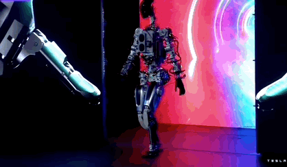

El 19 de agosto de 2021, Tesla anunció en su evento AI Day la creación de un nuevo
producto revolucionario: el Tesla Bot. Este robot humanoide, diseñado con una visión
futurista, está destinado a ser un compañero multifuncional y versátil que puede realizar
una variedad de tareas para ayudar a los seres humanos en su vida diaria.
El Tesla Bot se describe como un androide humanoide diseñado para realizar tareas repetitivas
y peligrosas, lo que libera a los humanos de trabajos monótonos y riesgosos. Con un diseño elegante
y avanzadas capacidades de inteligencia artificial, el Tesla Bot tiene el potencial de cambiar la
forma en que interactuamos con la tecnología y el mundo que nos rodea.
Una de las características más destacadas del Tesla Bot es su capacidad para realizar una amplia gama
de tareas físicas y cognitivas. Desde la entrega de paquetes hasta la limpieza del hogar, pasando por
la asistencia en la fabricación y la atención médica, el Tesla Bot puede adaptarse y realizar diversas
funciones para satisfacer las necesidades de los usuarios.

Además de sus habilidades físicas, el Tesla Bot está equipado con una variedad de sensores y cámaras
que le permiten navegar por su entorno de manera segura y detectar y responder a objetos y personas a
su alrededor. Esto garantiza que el robot pueda operar de manera segura en una variedad de entornos y
situaciones.
El anuncio del Tesla Bot representa un paso significativo en los esfuerzos de Tesla por avanzar en la
inteligencia artificial y la robótica. Si bien aún quedan muchas preguntas por responder sobre cómo se
implementará y utilizará el Tesla Bot en la vida cotidiana, su presentación marca un emocionante avance
en el campo de la automatización y la tecnología robótica.
En resumen, el Tesla Bot promete ser un avance revolucionario en el campo de la robótica, ofreciendo un
compañero versátil y multifuncional que puede ayudar a mejorar nuestras vidas y transformar la forma en
que interactuamos con el mundo que nos rodea.